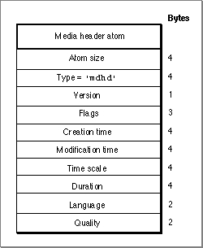

Media Header Atoms
The media header atom specifies the characteristics of the media that is used to store data for the movie track defined in its associated track atom. The media header atom contains the number of bytes in the media header atom, the format of the data in the media header atom (defined by the'mdhd'atom type), and the media header.
The media characteristics include temporal information. Figure 4-10 shows the layout of the media header atom.Figure 4-10 The layout of a media header atom

You define a media header atom by specifying these elements:
- Size. A long integer that specifies the number of bytes in this media header atom.
- Type. A long integer that specifies the type of data in this media header atom (defined by the atom type,
'mdhd').- Version. One byte that specifies the version of this movie.
- Flags. Three bytes of space for future media header flags.
- Creation time. A long integer that specifies (in seconds since midnight,
January 1, 1904) when the media atom was created.- Modification time. A long integer that specifies (in seconds since midnight,
January 1, 1904) when the media atom was changed.- Time scale. A time value that indicates the time scale for this media--that is, the number of time units that pass per second in its time coordinate system.
- Duration. The duration of this media in media time scale units.
- Language. A short integer that specifies the language code for this media. See Inside Macintosh: Text for more on language codes.
- Quality. A short integer that specifies the playback quality (that is, its suitability for playback in a given environment) for this media. See the chapter "Movie Toolbox" in this book for details on playback quality.